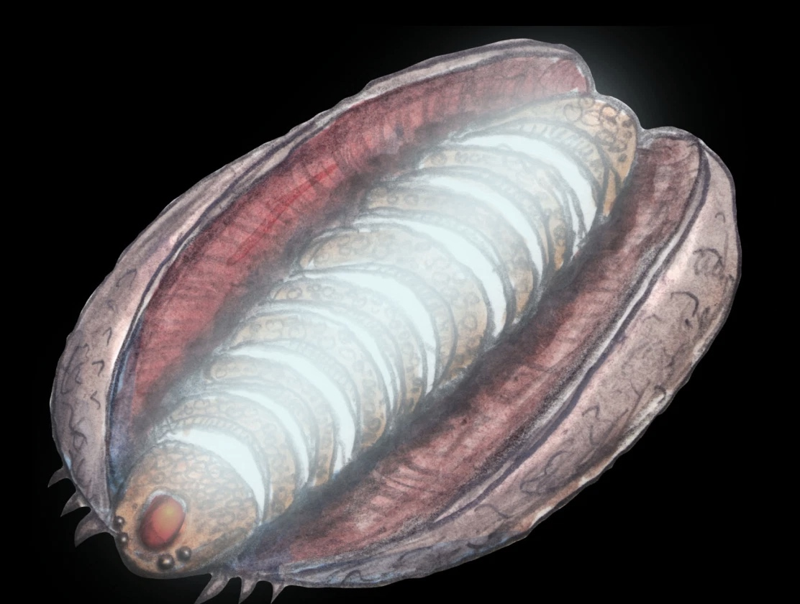

Mythical Creatures Around the World
7 Chilote Mythical Creatures
In Southern Chile, the Chilote mythology (or Chilota mythology) formed from the myths, legends and beliefs of the people who lived in the Chiloé Archipelago, a group of islands off the mainland of country Chile. The mythology of Chiloé resulted from a mixture of the indigenous religion and beliefs of the Huilliche and Chono and the legends and superstitions brought by the Spanish; the culture of the archipelago remained strong due to little contact from the rest of Chile and the Western World, making the mythology distinctive from the rest of Chile to this day. Within the mythology, its mythical creatures rely on a general hierarchy, with the sea serpants Tenten Vilu and Caicai Vilu at the top rankings; their legendary battle is said to have caused the creation of the archipelago. Below them is the king of the seas, the Millalobo, and his wife the Huenchula. Below them are their three children: the Pincoy, the prince of the sea, and the Pincoya and Sirena chilota, the princesses; they aid their parents in ruling the seas. Below them are other mythical creatures with given ranks by the Millalobo. Earthly creatures, however, are given no heirarchy. However, some humans are said to have magical powers such as witches with their ability to fly and have different creatures under their command; an example of such creatures is something called the Invunche. There is also machis, people who played an important role in Mapuche culture and religion; they possess their own characteristics and functions in the Chilote.
Carbunclo (carbuncle)

Carbunclo sourced from A Book of Creatures
A carbunclo is an intriguing creature sighted in the southernmost countries of South America, including Argnetina, Paraguay, and Chile and its islands called the Chiloé Archipelago. There was even a possible sighting of their blue glow in 1925 during a great drought in Tulahuén, Chile; it was believed a family of carbunclos were heading towards Río Grande in search of water. Description of its appearance vary from resembling a small dog, a bivalve, or a cat with a glowing chin. In 1791, Father Narciso and Barcel described its shell possess beautiful plumage and spots on its breast. In 1879, a man named Eulogio Rojas noted the carbunclo having more than four legs while observing it a meter way. Regardless, its most notable features include a shell, usually resembling one like an armidillo, and a glowing stone on its forehead usually depicted as red as a ruby. It's body is also thought to glow a bright bluish-white aura, making it easily noticeable especially in the night when it searches for food and water, so when an enemy is detected, the carbunclo will clamp up in its shell to distinguish its light and camouflage into an ordinary stone. Along with being about the size of a cat, this creature is said to be able to leap and run swifty and have keen hearing senses of smell as additional defense from enemies. Likely due to its stone on its forehead, its name derived from the latin word carbunculus meaning "little coal". However, its alluring blue light and the glow from its stone possibly led people to believe hold untold riches within their bodies, and thus sought after by miners and prospectors; in Chile, there is even a meticulous procedure into finding its treasure if buried. Even a Spanish cleric, explorer and author named Martín del Barco Centenera tried hunting it down, believing a carbunclo's stone would bring joy and fortune. But luckily no one, not even Martín del Barco, has yet to catch these beautiful creatures.
sources:
List of Turkic Mythological Creatures - travelnhistory.comList of Turkic Mythological Creatures - fairychamber.com
Calopus - abookofcreatures.com
Calopus - non-aliencreatures.fandom.com
Calopus - cryptidz.fandom.com
Bichura - en.google-info.org
Basty - en.wikipedia.org
Irshi - fairychamber.com
Irshi - en.wikipedia.org
Karankoncolos - villains.fandom.com
Shurale - en.wikipedia.org
Shurale - karkadann.fandom.com
Archura - en.wikipedia.org